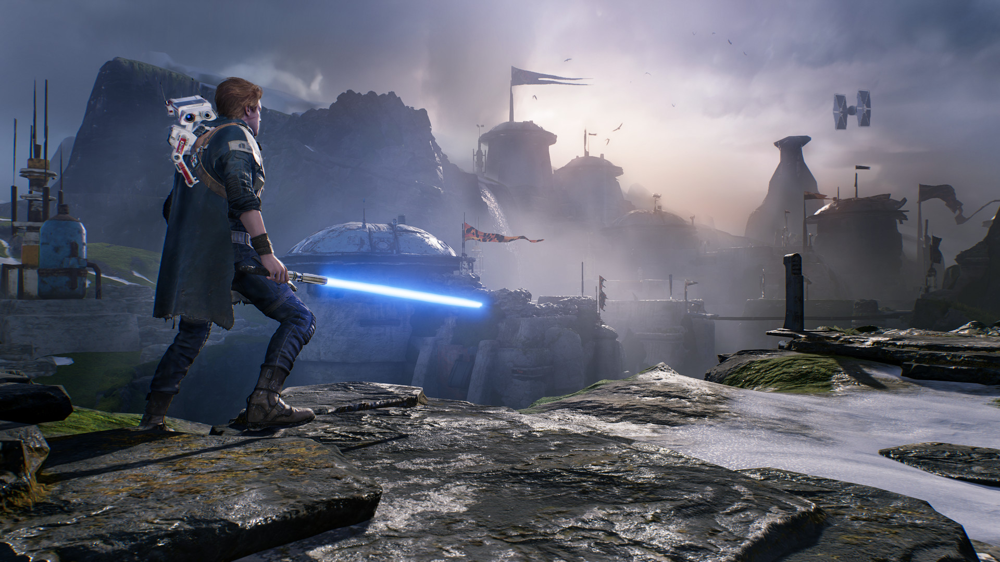

STAR WARS Jedi: Upadły zakon™

Przeżyj przygodę obejmującą swoim rozmachem całą galaktykę w STAR WARS Jedi: Upadły zakon – trzecioosobowej grze akcji studia Respawn Entertainment. Osamotniony padawan musi ukończyć swoje szkolenie, rozwinąć nowe, potężne zdolności Mocy i opanować sztukę władania...
DATA WYDANIA: 15 listopada 2019
PRODUCENT: Respawn Entertainment
WYDAWCA: Electronic Arts
KATEGORIE: Akcja, Przygoda
WYDAWCA: Electronic Arts
KATEGORIE: Akcja, Przygoda
Napisz recenzję dla STAR WARS Jedi: Upadły zakon™
Opisz, co podobało ci się (lub nie) w tej grze i czy polecasz ją innym użytkownikom.
O TEJ GRZE
Przeżyj przygodę obejmującą swoim rozmachem całą galaktykę ze Star Wars Jedi: Upadły zakon – nową, trzecioosobową grą akcji studia Respawn Entertainment. W tej grze fabularnej dla jednego gracza wcielasz się w Padawana Jedi, który cudem uchronił się przed czystką zapoczątkowaną Rozkazem 66 bezpośrednio po wydarzeniach z kinowej Części III: Zemsta Sithów. Na drodze ku odbudowie Zakonu Jedi przyjdzie ci poskładać kawałki swojej obróconej wniwecz przeszłości, ukończyć szkolenie, rozwinąć nowe, potężne zdolności Mocy i opanować sztukę władania mieczem świetlnym. Wszystko to pozostając o krok przed Imperium i jego zabójczymi inkwizytorami.
W trakcie doskonalenia swoich zdolności gracze stoczą porywające pojedynki z użyciem miecza świetlnego i Mocy, znane z filmowej sagi Gwiezdnych Wojen. Gracze będą musieli podejść do walki w metodyczny sposób, analizując atuty i słabości oraz polegając na sprytnym użyciu treningu Jedi, aby pokonać przeciwników i rozwiązać stojące im na drodze zagadki.
W trakcie doskonalenia swoich zdolności gracze stoczą porywające pojedynki z użyciem miecza świetlnego i Mocy, znane z filmowej sagi Gwiezdnych Wojen. Gracze będą musieli podejść do walki w metodyczny sposób, analizując atuty i słabości oraz polegając na sprytnym użyciu treningu Jedi, aby pokonać przeciwników i rozwiązać stojące im na drodze zagadki.
W trakcie doskonalenia swoich zdolności gracze stoczą porywające pojedynki z użyciem miecza świetlnego i Mocy, znane z filmowej sagi Gwiezdnych Wojen. Gracze będą musieli podejść do walki w metodyczny sposób, analizując atuty i słabości oraz polegając na sprytnym użyciu treningu Jedi, aby pokonać przeciwników i rozwiązać stojące im na drodze zagadki.
W trakcie doskonalenia swoich zdolności gracze stoczą porywające pojedynki z użyciem miecza świetlnego i Mocy, znane z filmowej sagi Gwiezdnych Wojen. Gracze będą musieli podejść do walki w metodyczny sposób, analizując atuty i słabości oraz polegając na sprytnym użyciu treningu Jedi, aby pokonać przeciwników i rozwiązać stojące im na drodze zagadki.

GŁÓWNE CECHY
- Porywające, filmowe pojedynki – Jedi: Upadły zakon pozwala poczuć się jak Jedi za sprawą innowacyjnego systemu walki mieczem świetlnym: ciosów, parad i uników uzupełnionych o wachlarz potężnych zdolności Mocy, które okażą się niezbędne, aby pokonać przeszkody stojące na drodze gracza. Opracowany system jest intuicyjny, ale wymaga treningu i praktyki, aby móc go opanować na przestrzeni przygody wraz z nowymi technikami i zdolnościami.
- Początek nowej opowieści o Jedi – Jako niedoszły Padawan, który ucieka przed Imperium, musisz ukończyć swoje szkolenie Jedi, zanim imperialni inkwizytorzy odkryją twój plan wskrzeszenia Zakonu Jedi. U boku byłego Rycerza Jedi, zrzędliwego pilota i nieustraszonego droida spróbujesz uciec przed podstępnymi machinacjami Imperium w trakcie tej fabularnej przygody. Odkrywaj i pokonuj rozliczne wyzwania związane z walką, eksploracją i rozwiązywaniem zagadek.
- Galaktyka czeka – Prastare puszcze, omiatane wiatrem urwiska i złowieszcze dżungle składają się na unikalne środowiska, które będziesz odkrywać w Jedi: Upadły zakon, mając pełną wolność wyboru, gdzie skierujesz swoje kroki. Wraz z odblokowaniem nowych technik i zdolności otworzą się przed tobą możliwości powtórnego przemierzenia map w zupełnie nowy sposób, polegając przy tym na Mocy. Nie zwlekaj jednak, bowiem po piętach depcze ci Imperium, chcące unicestwić wszelkie pozostałości po Zakonie Jedi.